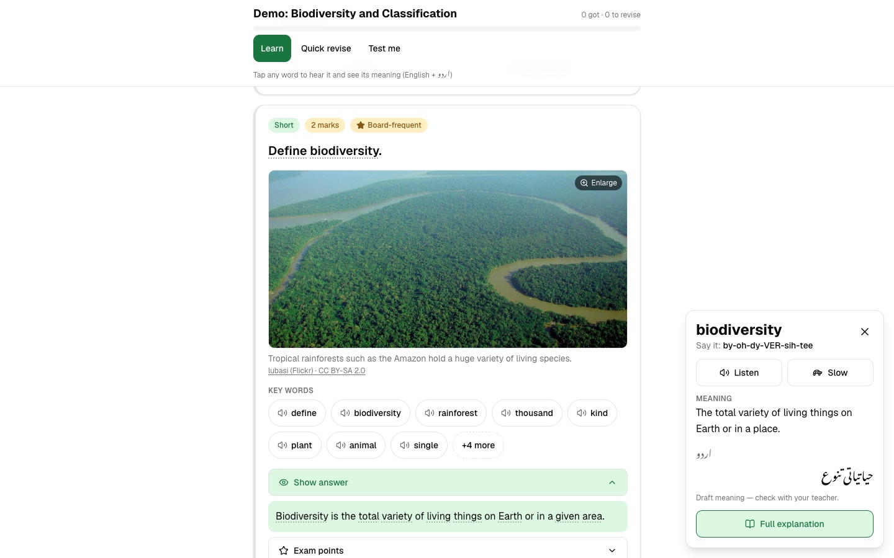

Case study · AI & automation
AI textbook ingestion and study reader
Turns scanned textbook chapters into a searchable reader with AI answer cards, glossary links, figures, quizzes and flashcards.
At a glance
- Who it's for
- Secondary-school students studying from a prescribed textbook, and the content reviewer preparing it.
- Core stack
- Next.js, PostgreSQL, Gemini models, Zod
- What sets it apart
- A review-aware pipeline that converts a scanned textbook into linked, interactive study material.
What it looks like in use
A student studying one chapter: practice questions, answers, key words and the four ways to study.
Class 11 BiologyRead Learn Quick revise Test me
Notice shown above the questionsThese answers were written by AI from the textbook text and have not been checked by a teacher yet. Use them to practise, and confirm important facts in the book.
Question card
What is a cell?
Show answerOpen
The cell is the basic unit of life. Every living thing is made of one or more cells.AI-written answer
Exam pointsTap to open
Revise laterGot it
Chapter progress
Marked Got itMost cards
Marked Revise laterA few cards
Not tried yetSome cards
Key words
CellHear it, see the meaning
OrganelleHear it, see the meaning
MembraneHear it, see the meaning
Figure from the textbook
Simple meaningAI-written
Real screens from the working product (sample data)

A study session, step by step
-
Sara opens her biology chapter
She picks a way to study: read the text, learn with cards, revise quickly or test herself.
-
She taps a word she does not know
A short, plain meaning opens beside the text, so she does not have to leave the page.
-
Each answer says who wrote it
AI-written answers carry a clear label, so she knows to check important facts in her book.
-
She photographs a page from her book
The page lens reads the photo and gives her an AI analysis of the page.
-
Her progress is kept for next time
Cards she marked Got it and Revise later are remembered, so she can pick up where she stopped on her device.
The challenge
Students study from scanned PDF textbooks that are hard to search. There is no linked glossary, no practice questions, and figures are locked inside page images.
Turning a book into structured study material by hand is slow. AI-generated study content is also risky, so provenance and review are treated as first-class concerns, with a warning about copyright on source scans.
The solution
An ingestion pipeline renders PDF pages, extracts text into chapters, topics, sections and paragraphs, and asks AI models to generate answer cards, glossary terms and figure bounding boxes.
Results are validated against schemas, cached, and imported into the database in all-or-nothing steps that are safe to repeat, with a trial-run mode. A Next.js reader then offers inline glossary terms and figures, quizzes, flashcards, bookmarks, progress, search and a page-lens tool that analyzes a photographed page.
For your technical teamhow it works under the hood
Ingestion stages across model, cache and database
Key features
What the system does, as built in the codebase.
- 01
Chapter reader
A read view with sections, paragraphs and figures placed between the text.
- 02
AI answer cards
Generated question cards with summaries, points and multiple-choice explanations.
- 03
Auto-linked glossary
Whole-word term markers are inserted into paragraphs and linked to cards and diagrams.
- 04
Figure extraction
A vision model locates figures on rendered pages and crops them to images.
- 05
Quizzes and flashcards
Practice tools with local progress tracking.
- 06
Full-text search
Search over paragraphs using a search index built for the purpose.
- 07
Page lens
Upload a photo of a page for AI analysis, with rate limiting.
- 08
Word lookup and speech
Vocabulary support with word lookup and speech.
How it fits together
From a scanned PDF to a reviewed, searchable reader.
- Textbook PDFpage rendering
- AI ingestionanswer cards, terms, figures
- Validation & cacheZod schemas
- PostgreSQLchapters, cards, glossary
- Next.js readerread, quiz, search
- Page lensphoto analysis API
- Ingestion scripts write through idempotent import transactions.
- The reader reads through a repository that can fall back to demo content.
Implementation notes
Engineering decisions worth knowing about.
Provenance and review states
Content carries explicit provenance (demo, approved, AI-generated) and review status (draft, needs review, approved).
Repository pattern
In-memory demo content and a PostgreSQL implementation are chosen by environment.
Database security
A row-level security migration is paired with server-only database access.
Staged, safe ingestion
Cached stages use schema-validated files, partial-run guards, transactions and dry-run.
Model fallback
Multiple models are tried when figure detection fails.
Image safety
Image features use safe fetching, license checks and request limits.
Tested
Extensive unit tests plus database integration tests.
Technology stack
Taken from the project's dependency and config files.
- Frontend
- Next.js
- React
- Tailwind CSS
- shadcn/ui
- Base UI
- Backend
- Next.js route handlers
- Node.js
- TypeScript
- Data
- PostgreSQL (pg)
- Full-text search
- Row-level security
- AI & PDF
- Gemini models
- mupdf
- pdf-lib
- sharp
- Validation & testing
- Zod
- Vitest
- Infrastructure
- Docker Compose for local database
For your technical teamtechnology layers
Technology layers, reader to infrastructure
Business value
What the system enables. No numbers are claimed.
- Converts static scanned material into interactive, searchable study content.
- Keeps AI output reviewable through explicit provenance and review states.
- Makes chapter ingestion repeatable and safe to re-run.
- Works without a database through demo mode, lowering the barrier to try it.
Need a system like this built?
Tell us what it needs to do and we will scope it with you on a call.